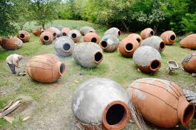
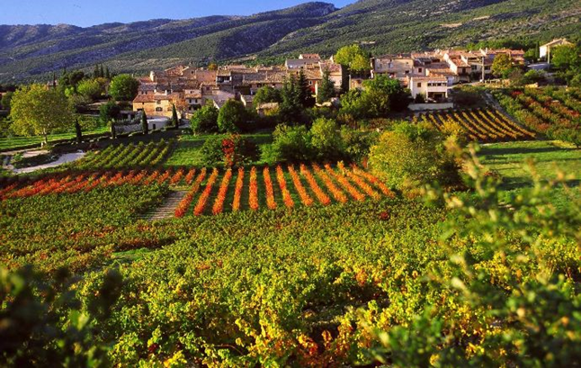

ღვინის ისტორია
ღვინო ერთ-ერთი უძველესი ალკოჰოლური სასმელია მსოფლიოში. მისი ისტორია ათასობით წელს მოიცავს და მჭიდროდ არის დაკავშირებული კულტურასთან, რელიგიასთან და სხვადასხვა ცივილიზაციის ყოველდღიურ ცხოვრებასთან.
ქართული ღვინის ისტორია
საქართველო ფართოდ არის აღიარებული როგორც ღვინის სამშობლო. არქეოლოგიური აღმოჩენები ადასტურებს, რომ საქართველოში ღვინო 8 000 წელზე მეტი ხნის წინ მზადდებოდა. ტრადიციული მეთოდი, ქვევრში ღვინის დაყენება, დღემდე შენარჩუნებულია და იუნესკოს არამატერიალური კულტურული მემკვიდრეობის ნუსხაშია შეტანილი.
ქართული მეღვინეობები
საქართველოში არსებობს უამრავი ისტორიული და თანამედროვე მეღვინეობა. ისინი წარმოადგენენ სხვადასხვა რეგიონების ღვინოს, როგორიცაა:
- კახეთი: ყველაზე ცნობილი რეგიონი, სადაც ყველაზე ძველი ქვევრებია.
- რაჭა: სპეციალიზირებულია თეთრ, ნახევრად ტკბილ ღვინოებზე.
- მეგრულია: ადგილობრივი ტრადიციული ჯიშების წარმოება.
თანამედროვე მეღვინეობები იყენებენ ევროპულ და ადგილობრივ ტექნიკას, რათა მიიღონ მაღალი ხარისხის ღვინოები როგორც ადგილობრივ, ასევე ექსპორტისთვის.
ღვინის ტრადიციები და არტეფაქტები


ვიდეო მასალა ღვინის ისტორიაზე
ღვინო მსოფლიოს გარშემო
საქართველოს გარდა, მეღვინეობა განვითარდა ძველ ეგვიპტეში, საბერძნეთსა და რომში, სადაც ღვინო მნიშვნელოვანი ნაწილი იყო კულტურისა და ვაჭრობის. მოგვიანებით მეღვინეობა გავრცელდა ევროპის სხვა ქვეყნებში, შემდეგ კი ამერიკაში, ავსტრალიასა და სამხრეთ აფრიკაში, რამაც შექმნა თანამედროვე გლობალური ღვინის კულტურა.
საინტერესო ფაქტები ღვინის შესახებ
- ქვევრებში ღვინის დაყენება მსოფლიოს ერთ-ერთი უძველესი მეთოდია.
- ქართული ვაზის ჯიშები აღემატება 500-ზე მეტ სახეობას.
- ღვინო გამოიყენებოდა რელიგიურ რიტუალებში და სამედიცინო მიზნებისთვისაც.
- თანამედროვე მეღვინეობები აერთიანებენ ტრადიციულ ტექნიკას და თანამედროვე ტექნოლოგიას.